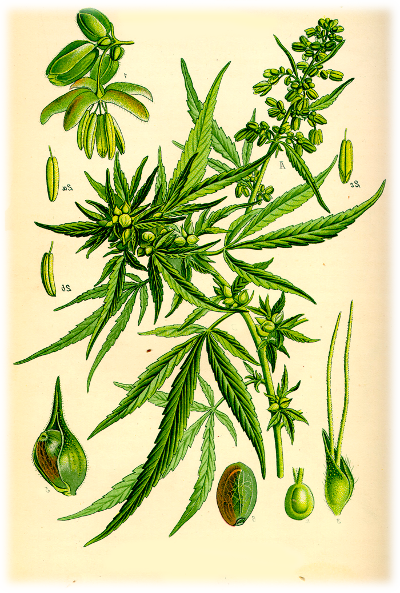
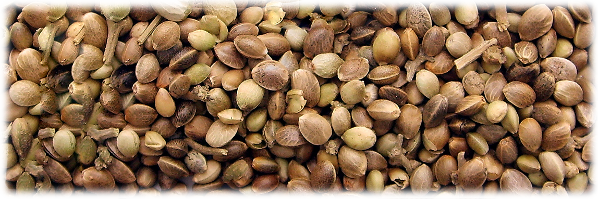
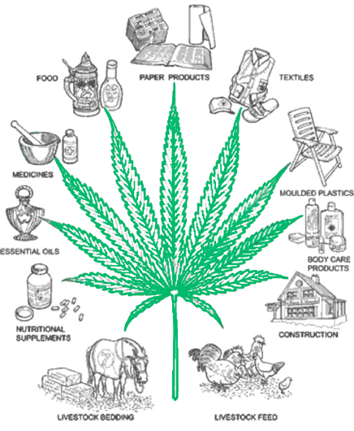

Растение конопли имеет массу возможных применений, и польза ее употребления/применения безусловно велика. Предлагаем разобраться в вопросе какая же все таки польза марихуаны и почему во всем мире это растение не дает смирения с запретом.
Польза конопли в промышленности и польза марихуаны при курении и употреблении в быту
Использование конопли широко распространялось по всеми миру еще за долго до существования административных учреждений и правительства, которое ее запретило. Польза конопли и ее положительное влияние на человека является несомненным. Представленный список дополняется ежемесячно, но исследования с применением марихуаны запрещены во многих странах, что замедляет процессы получения достоверной или наверняка подтвержденной информации.
Польза от марихуаны для тела и лечения заболеваний:
- ВИЧ. Употребление марихуаны в виде курительных смесей и марихуаны в кулинарии, значительно сокращает количество вирусных клеток в организме. Прямое влияние имеет ТГК растения. Употребление значительно снижает ущерб иммунной системы человека, который бесповоротно наносит ВИЧ.

- Ожирение. По статистике голландских ученых, любители марихуаны значительно реже страдают от этой болезни чем остальные.
- Раковые заболевания. Периодическое курение марихуаны польза от которой зависит от ТГК, снижает риск получения и распространения раковых клеток. Так же марихуана снижает последствия химиотерапии, при этом абсолютно не влияя на результат химиотерапии.
- Судорожные рефлексы. Марихуаны польза таковой является для лечения хронических судорожных припадков.
- Мозговая активность. Умеренное употребление канабиноидов замедляет процессы старения мозга и дегенерации. Основной целебный компонент ТГК является нейропротектором и действует получше многих специальных химических лекарств.
- Аутоиммунные болезни. Польза от конопли, а конкретно ее ТГК, значительно снижает восприимчивость организма человека к таким болезням.
- Сердечная недостаточность. Умеренное употребление минимального количества ТГК предотвращает легочно-сердечные недостаточности.
- Посттравматический синдром. Польза курения конопли имеет безотказные приоритеты при лечении нервных и психических расстройств. Умеренное употребление, позволяет многим жителям планеты выйти из состояния серьезных психологических зажимов и помогает пережить стрессовые ситуации.
- Артроз. Боли которые вызывает остеоартрит значительно снижаются при употреблении конопли.
- Болезнь Крона. Польза курения марихуаны неоценима при лечении болезни Крона. Благодаря конопле, заболевание переходит в стадию ремиссии и человек снова может здорово функционировать. Так же значительным плюсом есть то что марихуана не вызывает побочных эффектов, которые являются неотъемлемым результатом медикаментозного лечения.
- Диабет. Низкий уровень инсулина в крови, так же является следствием регулярного применения канабиса.
- Лечение от метамфитамина. Лечение наркомании такого уровня посредством употребление марихуаны, значительно уменьшает токсичный эффект который происходит в теле человека после длительного приема метамфитамина.
- Болезнь Альцгеймера. Употребляемая конопля польза от которой весьма значительная при многих болезнях, в случае Альцеймера весьма велика. Травка не только подавляет внешние признаки болезни, но и словно вакцина снижает дегенеративный эффект болезни.
- Депрессивные состояния. Одиночество, социальная изоляция, психологические расстройства и другие душевные болезни, эффективно уничтожаются при употреблении конопли. Каннабис значительно помогает при нарушениях сна!
- Глаукома. Применение и польза конопли проявляется в снижении и предотвращении развития глаукомы.
Польза марихуаны для организма человека лежит не только в самом растении конопли, но и в конопляных семечках. На сегодняшний день, семена конопли приобретают все большей популярности среди приверженцев здорового образа жизни и людей желающих выглядеть отлично и молодо.

Употребляя семена конопли польза марихуаны увеличивается в десятки раз
Употребление в пищу семян конопли, в исторических записях впервые было замечено в древнем Китае. Люди употребляли не только растение конопли, но и ядра семечек для исцеления от болезней и как залог молодости тела и духа. Китайцы во многом превосходят европейцев касательно уровня здоровья, долголетия и развития, поэтому не удивительно что понимание целебных свойств этого растения впервые было замечено именно в этой стране.
Семена конопли польза для тела и ума. Как любые орехи и семена, конопляные семечки состоят из масел и белков, в соотношении 30% масел и 25% белков. Каждый компонент и отдельная часть структурной составляющей семени конопли это залог пользы:
- Масло семечек конопли на 90% состоит из полинасыщенных жирных кислот.
- Семена конопли насыщены незаменимыми жирными кислотами — линоленовая кислота Омега 6 и альфа-линолевая кислота Омега 3. Это единственное растение на планете, которое имеет идеальное соотношение этих кислот для организма человека — 3:1.
- Огромное содержание минералов — фосфор, калий, сера, кальций, магний, железо и цинк.
- Семя конопли это концентрат пищевых волокон, витаминов и минералов. Состоит из огромного количества клетчатки, витамина А, витамина С, витамина Е.
- Содержит биологические метаболиты незаменимые ЖК — это стеаридоновая кислота и гамма-линоленовая кислота.
- Белковая часть семени конопли состоит из протеина эдестино и альбумина которые являются комплексом незаменимых аминокислот.
Семена конопли и конопляное масло польза употребления которых неоднократно доказана исследованиями, помогают телу:
- Бороться с ожирением и холестерином. Семена и масло снижают уровень холестерина в организме человека, чем спасают от тромбоза, болезни сосудов и прочих осложнений.
- Улучшается состояние кожи. Употребление семян снижает симптомы дерматита и воспалительные кожные процессы.
- Препятствует болезни сердца. Конопляные семена способствуют разжижению крови, уменьшая риски инфарктов и инсультов.

Употребляйте семена конопли польза ведь от них безмерная!Ежедневное употребление семян в пищу восстановит организм уже за пару недель. Одной горстки сырых семечек конопли или немного поджаренных на масле, станут отличным рационом в Вашем "суперфуде". Так же можно добавлять немного соли и специй.
Конопля польза которой для человека бесценна, так же применяется и в промышленности
- Для производства нитей и тканей. Сумок и канатов.
- Снуды и самые прочные нити. (Такие использовались при транспортировке статуй из камня и других твердых материалов).
- Производство бумаги, книг, карт.
- Прочные и долговечные паруса для кораблей и мелких суден.
- Горючее.
- Лекарства, настои и лечебные отвары.
- Одежда, ремни, украшения и головные уборы. Постельное белье и полотенца.
- Употреблять марихуану можно и в пищу.
Суперфуд: Семена конопли
Употребление семян конопли в пищу было замечено еще в древнем Китае. Китайцы использовали ядра семечек для исцеления от болезней и как залог долголетия, молодости тела и духа.
Семена конопли — это настоящий концентрат полезных веществ. В них содержится идеальное соотношение Омега-3 и Омега-6 жирных кислот (3:1), что является лучшим вариантом для восстановления здоровья сердечно-сосудистой системы.
Витамины и Минералы
Богаты фосфором, калием, серой, кальцием, магнием, железом и цинком. Содержат витамины А, С и Е.
Белки и Протеины
Содержат протеины эдестино и альбумина — комплекс незаменимых аминокислот, включая высокий уровень аргинина.
Очищение организма
Помогают бороться с избыточным холестерином, разживают кровь (снижая риск инфарктов) и улучшают состояние кожи.
Совет: Достаточно одной горстки сырых или слегка поджаренных семечек в день, чтобы добавить в свой рацион полноценный «суперфуд».
Промышленное применение конопли
Польза конопли выходит далеко за пределы медицины. Это одно из самых универсальных растений в мире:
- Производство тканей, нитей, сумок и канатов
- Изготовление бумаги, книг и карт
- Создание долговечных парусов для судов
- Биотопливо и горючее
- Лекарственные отвары и настои
- Одежда, постельное белье и полотенца
🌿 Хотите узнать о лечении?
Подробнее о конкретных медицинских свойствах и методах терапии читайте в нашем специализированном разделе.
Лечебные свойства